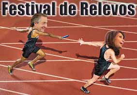
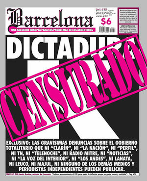
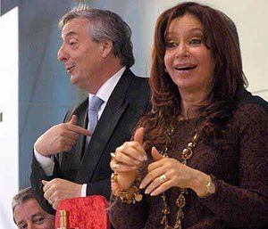

Cristina Fernández de Kirchner
 De: La Frikipedia, la enciclopedia extremadamente seria.
De: La Frikipedia, la enciclopedia extremadamente seria.
| De la serie gobernantes de ayer y de hoy:
|
| Cristina Fernández de Kirchner
|
|
|
Cristina ganando, tomando posesión y modelando la banda de Miss Argentina presidencial
|
|
| Nacimiento
|
1816
|
| Muerte
|
Falta poco (el complot esta casí completo)
|
| Cargo
|
Ex dueña suprema de Argentina
|
| Ideología
|
Comunista-nazi Indecisa, pero con tendencias al oportunismo
|
| Nacionalidad
|
 Argentina Argentina
|
| Cónyuge
|
Él
|
| Dinastía
|
Kirchner
|
| Notas
|
Está imputada por una denuncia de Alberto Nisman
|
«No-Fue-Magia»
~ Cristina Fernández al inaugurar una villa miseria
«Ni las balas de los militares nos asustaron, no nos van a asustar los mafiosos»
~ Cristina Fernández recibiendo huevazos
«La diabetes es una enfermedad que parecen las personas de alto poder adquisitivo porque son sedentarios y consumen mucha glucosa»
~ Cristina Fernández luciendo sus conocimientos sobre nutrición y salud incitando soberbiamente al odio y generando un revuelo en el país
«Los profesores no deberían quejarse porque tienen muchas vacaciones»
~ Cristina Fernández tratando de parecer trabajadora
«La ingesta de carne de cerdo favorece a la actividad sexual.»
~ Cristina Fernández dando un inspirador discurso de como ahorrar en viagra a su querido pueblo argentino
«Por favor, los de la corneta, que dejen hablar.»
~ Cristina Fernández enojada con la banda que tocaba cuando ella queria hablar en un discurso
«Chicos, por favor, esto no es La Matanza»
~ Cristina Fernández refiriéndose despectivamente a la Universidad de La Matanza
Cristina Elisabet Fernández Wilhelm de Kirchner(La Plata, también conocida como la K, Cristina K, la Diosa, la Presidenta, la Krispadora, la Kretina, la Montonera o la Matambrito, se ha ganado todos estos apodos por su virtuosa gestión como reina del Reino Maradoniano de Macri en esa ciudad) después de heredar el trono presidencial de su marido, el inefable Néstor Kirchner.
 Representación gráfica (más o menos exacta) de las elecciones
recibida en la Universidad de La Plata durante los Años de Plomo , y supuestamente montonera (aunque en realidad huyó hacia las ásperas tierras australes de Santa Cruz a comprar territorios de desaparecidos junto con su marido), se rumorea que ha tenido más de un affaire con gauchos patagónicos, indios tehuelches e inmigrantes pobres venidos del Hemisferio Norte a comprar las últimas reservas de Barrick Gold. Cristina siendo coronada Reina de Argentina
Asumió luego de cuatro años de gobierno de su marido, con la presunta intención de ir alternando con él los mandatos presidenciales, pero éste tuvo la lamentable idea de morirse antes, dejándola sola ante una posible reeleción, pero sin nadie con quien compartir mandatos adicionales.
Gestión
La gestión de Cristina Fernández, quien asumió su mandato en el 2007, no estuvo libre de controversia. Habiendo asumido su marido del seno del Peronismo Diabólico de manos de Innombrable y amigos políticos de la mafia manzanera. Haciéndose odiar por los medios de ultraderecha acomodatista y la gente racional; se vistió de montonera y comenzó su gestión Dentro de la República Argentina, Cristinita es conocida por su extensa obra de gobierno, siendo apoyada por amplios sectores de la población:motochorros, madres adolescentes, wachiturros, gente de barrios marginales, violadores, idiotas, etc(la mayoria comprados por un pancho y una coca) bajo la doctrina del "Mal mayor": por más que no hayamos cambiado mucho, estamos peor que antes.
El tren bala
El tren bala era un proyecto que le costaría una cantidad económica de plata, con los que conectaría muchas ciudades de toda la Argentina. Era una idea tan buena, que hasta muy pocos macristas (Los más pelotudos) se pusieron del lado de cristina. El problema fue que las naciones vecinas se negaron a seguir prestando dinero al país, por lo que el proyecto se fue a la mierda. Igualmente todos los argentinos se siguen preguntando 2 cosas a partir de este hecho:
- 1-¿Porqué no se usó la plata obtenida para mejorar y reparar los trenes que actualmente circulan en Argentina?
- 2-Y aún más importante: ¿DONDE QUEDÓ LA PLATA?
La campaña Anti-Viagra
Cristina mirandole la poronga a Jorge Capitanich.
Como Cristina y su esposo tuvieron una mala experiencia con el viagra, se le ocurrió, en una de sus ideas de satisfacer a sus súbditos electores, promover el consumo de carne de cerdo como afrodisíaco, puesto que el precio de la carne de vaca (un símbolo de la Argentinidad) había aumentado a niveles astronómicos, producto de la inflación incontrolable a la que se ve sujeta el país.
Ley de medios
 representacion de lo que el partido K no hara
En Junio y Julio de 2009, en medio de su "pelea" con la Prensa Independiente representada por el monopólico Grupo Clarín, a la presidenta y su señor esposo también se les ocurrió apropiarse oportunistamente de el proyecto de la izquierda nacional de cambiar una ley de la dictadura: la ley de radiodifusión, y por esa razón a la gente de la Prensa Libre Asociada, representada por el Grupo Clarín (dueño sólo de tres de cinco canales públicos, y unos 185 canales de cable, además del control de los diarios con mayor tirada en el país y de una fábrica de papel barato para diarios, concedida lícitamente por Jorge Rafael Videla) sintió sus derechos vulnerados por la presidencia y la llamó Ley K de Medios, pese a que no había nacido con ellos, ni haber sido votada ni enmendada exclusivamente por ella.
Esta ley tuvo repercusiones graves, puesto que ahora el Grupo Clarín sufre una gravísima censura a su Prensa, habiendo perdido el control de... bueno de ninguno... de sus órganos informativos, y sufriendo ataques de violencia por parte de la dictadura, como por ejemplo los de los comandos psicobolches montoneros, quienes atentan contra la ortografía y la redacción del otrora aburridísimo Gran Diario Argentino, convirtiéndolo en una masa ilegible de insultos con faltas ortográficas.
Sus Enemigos
- George W. Bush: lo odia por que no quiso financiar su mandato. Sin embargo, está de acuerdo contra la guerra contra el terrorismo, y hasta se financiaron tareas de construcción de la Estrella de la Muerte del Norteño.
- La Prensa: odia a los periodistas por que la discriminan contando demasiados detalles de su vida privada, como por ejemplo que usa más de 50 mil dólares en joyas cada vez que sale de su casa a dar un paseo presidencial, o sus propiedades en el Sur. Sin embargo, ha hecho poco por desarmarlos, solo la
afanada tiránica Ley de Medios K votada por una coalición de partidos de izquierda y el peronismo impuesta a sangre y fuego, que censura todo y no reparte los medios entre muchas personas.
 En una rueda de prensa se les preguntó "¿
Han sido corruptos?"
- Los Agricultores: odia especialmente a los
terratenientes sojeros pobres trabajadores del campo, por que andan en 4 x 4, pero lo que ella no sabe es que andan en 4 x 4 por que en el campo hay barro y mierda de caballo que dejan varado a un auto (además de muchos esclavos bolivianos de los cuales hay que aislarse tras las enormes ruedas, pisando sólo el número exacto como para evitar que se reproduzcan pero sin afectar la mano de obra), así como detesta el agotamiento del suelo fértil por la industria sojera además del uso de glifosato. Pero no odia a las empresas extranjeras de minería a cielo abierto, ni le molesta el trabajo esclavo al que se ven sujetos muchas personas de bajos recursos.
- Los Ganaderos: Odia a los
fascistas ganaderos por que no quieren pagar sus tributo real, y porque le causan inconvenientes a la hora de dibujar los precios de la inflación. Pero igual come carne, y no deja de darles subsidios.
- Elisa Carrió: Ésta
Gorda pedorra enemiga sin importancia es enemiga de todos los gobiernos y perdió en las elecciones presidenciales contra Cristina, por eso dijo públicamente que jamás iba a volver a postularse, pero también luego dijo que si ella estuviera en el gobierno, el pueblo argentino sería comandado por una horda de fanáticos religiosos, buscando la Mano de Dios para exterminar a pobres, manifestantes, ateos y homosexuales, a quienes sodomizaría con un fierro oxidado adquiriría la digna serenidad de pulso y la soberanía racional que sólo da el buscar las respuestas en la Divinidad. Probablemente se postule con una de esas cosas cívicas por que es política rompehuevos perseverante.
- El helicoptero de Fernando De La Grua: Lo odia con toda su alma, y rara vez deja pasar la oportunidad de nombrarlo para hacer campaña. Bien que todos los dias la yegua viaja de Olivos a La Rosada en helicóptero. Y después no hay fondos...
- Los Fascistas: Siempre que puede habla mal de ellos, sobre todo cuando tiene presiones de Israel. A su vez, es en la lucha contra el fascismo en lo que se ampara para luchar contra un gobierno militar que no la tocó y que la benefició matando gente a la cual ella y su marido le comprarían tierras.
- Mauricio Macri: quien con sus llamadas hot nocturnas no lo deja dormir, poseído por el espíritu de Bigote Poronga, razón por la cual mandó a sus Comandos Boqueteros Montoneros Psicobolches a derrumbar edificios en la ciudad y a agitar a los estudiantes de secundarias.
- Jorge Mario Bergoglio: cardenal de Buenos Aires, Mason y lamebolas de la comunidad de judá,
violaba niños un hombre muy cariñoso con la juventud y era feliz hasta que la iglesia lo secuestro para ser Papa.
- Grupo Clarín: Empresa que posee muchos diarios (nacionales y provinciales), el canal TN, fibertel, cablevisión entre otras cosas. Como el Grupo Clarín también es poderoso (tiene mucho ki) debió solicitar ayuda a los diputados, senadores y militantes para lograr crear una ley que los obligase a vender muchas de sus cosas para que cierren la boca, pero Clarín no se rindió y presentó quejas. Cris no dejaría que todo terminara así y a cada lado del mundo que va lleva unos militantes con carteles insultando a Clarín.
- Jorge Lanata: Periodista que emite un programa televisivo en el cual investiga toda la corrupción y cosas extrañas de Cristina y sus funcionarios aliados. En cada Cadena Nacional intenta insultarlo.
- IP anónima: Así es. IP anónima es enemigo de CFK por la simple razón de no pensar como ella y de no estar militando con La Cámpora en este momento.
- Néstor Kirchner: Su marido y anterior Rey del Reino Maradoniano de Argentina, habría sido asesinado por ella y su hijo Máximo para que Máximo pueda acceder al grado 33 Mason (ver enlaces externos).
- Los cordobeses(argentinos):ya que despues de las elecion salieron a festejar que perdiera su partido con fernet con coca cola
Sus Amigos
- Hugo Chávez: su mejor amigo, quien financió su presidencia enviándole miles de dólares con Antonini Wilson. Hugo siempre que pudo le hizo regalos con dinero de petróleo venezolano y ella le respondió hablando mal de los Estados Unidos.
- Fidel Castro: otro gran amigo, defensor de los derechos humanos como las madres de plaza de mayo. Igualito a las Madres.
- Las madres de plaza de mayo (zurdasssssssssssss): son unas ancianas que llevan un pañal en la cabeza en repudio a los bebes cambiados de familia por que sus padres eran terroristas y tiraban bombas fuera de época navideña.
- Hebe Bonafini: Líder de Madres de Plaza de Mayo, defensora de los derechos humanos, amiga de Fidel Castro y de Hugo Chávez. Esta
puta gorda de mierda cerda pedorra verborrágica hipócrita mujer vive llorando por su hijo asesinado por los militares para que viva con su padre en España de manera capitalista y lujosa, se alegró publicamente por que murieron tantas personas en las torres gemelas por que alguna vez le tenia que tocar a los imperialistas.
- Luis D'Elía: Simio cibernético con nivel bajo de inteligencia artificial que apenas controla para destruir a sus enemigos los blancos, a quienes odia.
- Las F.A.R.C.: Las conoció gracias a su amiga Hebe Bonafini, por eso está a favor de que Colombia les entregue detenidos de las mismas a cambio de secuestrados. Y apoya mientras tanto la política económica norteamericana-
- Montoneros: Antes ella no daba un mango por el peronismo de izquierda, pero tras la asunción de su mandato muchas personas, debido a sus políticas de encerrar a algunos genocidas la identificaron como montonera, mote
que oportunista y conveniente se apropió del cual nunca se desligó, haciendo quedar como infradotados derechistas a aquellos que la critican llamándola de esta manera.
- Los
pelotudos e ingenuos votantes: es decir, sin estos ingenuos pobres diablos maravillosos seres humanos no habría llegado a ser ni siquiera una indigente de Constitución. Para mantenerlos, regala plata subsidia al campo, los transportes y varias empresas privadas, aunque éstos tienen el mal hábito de insultarla, y no dejar participar al gobierno nacional de las empresas en las que puso plata, manteniendo parásitos monopólicos el libre juego de oferta y demanda.
- Barack Obama: Obama es su mejor amigo desde que el 4 de noviembre, cuando tuvieron esa llamada
bastante hot amistosa, ahora son amigos, y Cristina quiere convencer a Obama para exportar a los flogger hacia Miami.
- Rafael Correa: "Rafico" es su amigo mas intimo, cuando la visito en Argentina la dejo tan
exitada cautivada con sus ojitos y sonrisa, que le prometio devolverle la visita a Ecuador para ver si los hombres ecuatorianos eran bellos como "Rafico". Cuando se reunieron en Carondelet, se dice que hubo una solemne sesion de orgia brutal sexual trabajo tan arguo que terminaron exausto para "hachicar nuestras fronteras". Desde entonces ellos dos se comunican todas las noches despues de rendir culto a la estatua de Hugo Chávez que tienen de consolador adorno.
- Aníbal Fernández: Ha tenido muchos puestos: Ministro, Jefe de Gabinete, y actualmente Senador; pero nadie sabe que es en realidad el
Chupamedias asistente personal de Cristina. Cristina confía en que él insultará a la oposición a cambio de un Departamento financiado con dinero de impuestos refuerzo positivo.
- Francisco: Actual pontífice. Son grandes amigos, incluso CFK le regaló un mate y un termo. OJO: este Francisco no tiene nada que ver con el odiado Bergoglio, el cura opositor.
¿Sabías que...
- ...En este articulo entra gente de la campora para ocultar la verdad sobre Cristina y sus amigo?
- ...como Luis D'Elía odia profundamente a los blancos, y se quiere operar de forma inversa a Michael Jackson?
- ...el primer ministro de economía renunció a los 3 meses de su mandato?
- ...No apareció en la foto de el Congreso de alimentación en Italia, porque estaba retocando su peinado?
- ...se personifica como abanderada de los pobres mientras luce carteras Louis Vuitton que cuestan más que tu casa?
- ...Aumentó las retenciones de soja en un 9%, con la excusa de bajar las de el maíz, lo que hizo en un cuantioso 0, 5%? (Las retenciones son un impuesto que se le aplica al cereal; los productores gracias a ese impuesto, cobran
el doble la mitad de lo que vale)
- ...Al asumir
Hizo cagadas Trabajó 14 días y se tomó unas vacaciones de 16 días?
- ...el proyecto de tren bala iba a abarcar 3 ciudades y costar 5000 millones de dólares, con el cual se podrían haber construido mas de 10000 escuelas, 10000, hospitales, 10000 km² de gente con agua, electricidad, cloacas y una vivienda digna?
- ...Odia a Paris Hilton --afortunadamente?
- ...Hizo, junto con su marido (más allá de las muchas críticas que se le pueden y deben hacer), que se acabara la farandulización de la política y se debatieran ideas por primera vez en casi veinte años?
- ...A pesar de que no cambia nada estructuralmente, de que se enriqueció durante su gobierno, de que maneja muchas cosas oscuras, sus opositores suelen ser peores que ella?
- ...Le gusta Rafael Correa, tanto que cada noche mantienen video conferencias via "ChavezKype"?
- ...Le dicen "La Viuda Negra" Ya que su marido y su amante (Hugo Chávez) Murieron de cáncer?
- ...Puede que ella sea cancerígena?
- ...Gana las elecciones haciendo votar a esqueletos que invoca un nigromante?
Enlaces Externos
Autor(es):
- Fordus
- Roms
- Azulejos
- El Sevillano
- Zigma
- Bygg07
- Cerberus
- Fry3000
- Tobi
- Lucas friki
Frikipedia 2005-2016, Licencia
GFDL 1.2 - Extraído por FrikiLeaks